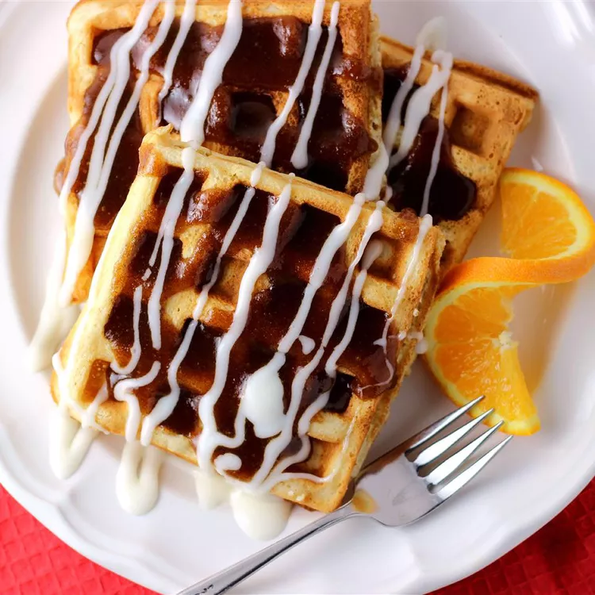

Cinnamon Waffles

Description
These cinnamon roll waffles with a sweet cream cheese topping taste just like a cinnamon roll!
Serve with bacon to help contrast the sweetness.
Ingredients
Waffles:
- 2 cups all-purpose flour
- 2 tablespoons white sugar
- 4 teaspoons baking powder
- 1 teaspoon salt
- 1 1/2 cups warm milk
- 1/3 cup butter, melted
- 2 eggs, beaten
- 1 teaspoon vanilla extract
Cinnamon Topping:
- 3/4 cup brown sugar, packed
- 1/2 cup butter, melted
- 1 tablespoon ground cinnamon
Cream Cheese Topping:
- 1 1/2 cups confectioners' sugar
- 1 (3 ounce) package cream cheese, softened
- 1/4 cup butter, softened
- 1/2 teaspoon vanilla extract
- 1/8 teaspoon salt
Steps
- To make the waffles: Preheat a waffle iron according to the manufacturer's instructions.
- Whisk flour, white sugar, baking powder, and 1 teaspoon salt together in a large bowl.
Beat warm milk, 1/3 cup melted butter, eggs, and 1 teaspoon vanilla extract together in another bowl.
Add milk mixture to flour mixture and stir until batter is lumpy and just moistened.
- Ladle batter into the preheated waffle iron, working in batches if necessary, and cook until golden brown
and the iron stops steaming, about 5 minutes.
- To make the cinnamon topping: Stir brown sugar, 1/2 cup melted butter, and cinnamon together in a small bowl.
- To make the cream cheese topping: Beat confectioners' sugar, cream cheese, 1/4 cup softened butter, 1/2 teaspoon vanilla extract,
and 1/8 teaspoon salt together in a medium bowl.
- Place waffles on a plate and drizzle cinnamon mixture and cream cheese mixture over the top.